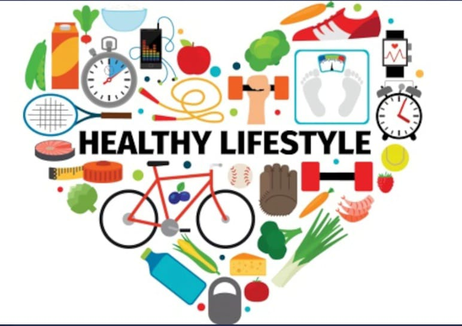

healthy page
HOME PAGE

Morning Routine:
Wake up early – Aim for 6–7 AM.
Hydrate – Drink a glass of water.
Stretch / Exercise – 10–20 minutes of yoga, jogging, or simple stretches.
Healthy Breakfast – Include protein, fruits, and whole grains.
Plan your day – Write down top 3 priorities in your to-do list.
Daytime routine:
- Focus sessions – Use time blocks for work or study.
- Healthy snack – Fruits, nuts, or yogurt.
- Hydrate regularly – Drink water every 1–2 hours.
- Short breaks – Take 5–10 minutes every hour to walk/stretch.
- Sunlight / Fresh air – Spend at least 10–15 minutes outdoors.
Afternoon Routine:
- Balanced lunch – Include vegetables, protein, and complex carbs.
- Power nap / Relaxation – 10–20 minutes if needed.
- Check progress – Tick off completed tasks.
Evening Routine:
- Exercise / Walk – Light activity to refresh the mind.
- Healthy dinner – Light meal, avoid heavy carbs.
- Reflect on the day – Gratitude journal or note what went well.
- Digital detox – Reduce phone/computer usage 1 hour before bed.
Night Routine:
- Prepare for next day – Plan tasks, set reminders.
- Relaxation – Reading, meditation, or listening to calm music.
- Sleep – Aim for 7–8 hours of restful sleep.